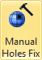
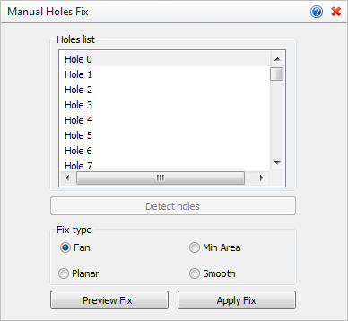

You can use this command to fix individual holes in your mesh model. Once all holes are identified, you can select a hole, preview the fix and then apply it to the mesh. A hole fix for this example is shown below.
 To Fix your Mesh Automatically: This command requires you to fix holes in your mesh manually (i.e., one at a time). If your mesh has many holes, gaps between edges and/or improperly oriented facets, you should try using either the Stitch & Close or Auto Fix command. You can also use the Diagnose tool to fix other irregularities such as Short Edges, Large Angles, etc. To Fix your Mesh Automatically: This command requires you to fix holes in your mesh manually (i.e., one at a time). If your mesh has many holes, gaps between edges and/or improperly oriented facets, you should try using either the Stitch & Close or Auto Fix command. You can also use the Diagnose tool to fix other irregularities such as Short Edges, Large Angles, etc.
|
1.First the mesh is selected and the holes are detected and listed. 2.Then a hole is selected along with the type of fix to use. 3.You can then preview and apply the fix. |
|
Screen Pick
|
Optional Information
|
Step 1
|
Select the mesh you want to fix and then press Enter or Right-click. You can select from the graphics window or from the Browser.
|
You can select a mesh first and then select the command icon.
|
Step 2
|
Pick the Detect holes button and the Holes list will be populated.
|
See below.
|
Step 3
|
Select a hole from the list and then choose a Fix type option.
|
-
|
Step 4
|
Select the Preview Fix button to see the results and then pick the Apply Fix button to update the mesh.
|
-
|
|
These options appear on the Browser for this command.
 Manual Holes Fix Options
The mesh is evaluated and all detected holes are numbered and listed. Select a hole from the and it will highlight on the mesh. Note: If you double-left-click on a hole in the list, it will be oriented for displayed on the graphics screen.
|
Choose one of the Fix type options. The sample results of each type are shown in the images below.
|
•Preview Fix
Select this button to preview the fix on the mesh. The Fix type images shown above are previews. •Apply Fix
When satisfied with the Fix type and the Preview, select this button to update the mesh. |
Before mesh(es) are selected:  or or
After mesh(es) are selected: or or
|
 Using this command will change the shape of your facet model! Experimentation with the methods and options listed above is advised until you understand and are satisfied with your results. Using this command will change the shape of your facet model! Experimentation with the methods and options listed above is advised until you understand and are satisfied with your results.
|
|